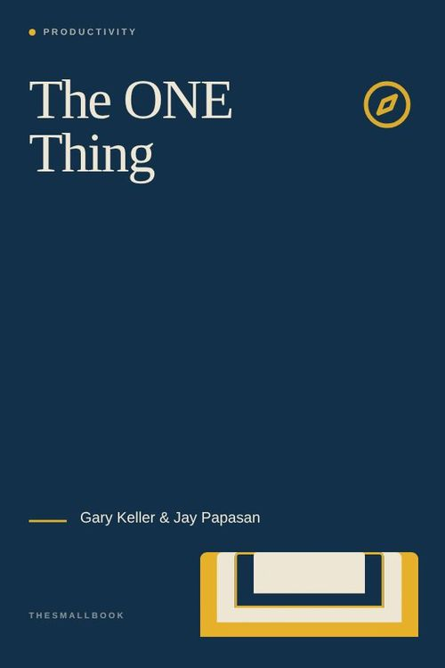
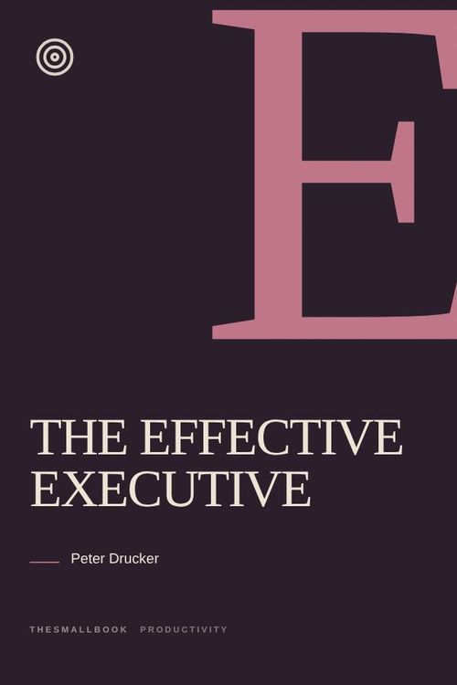

Library › Ask the Library › How do I manage my time better?
How do I manage my time better?
The short answer
You can't manage time, you can only design it. Pick one Highlight a day, protect it with a laser, and say no to everything that isn't essential.
The books behind the answer

Make Time
Jake Knapp & John Zeratsky · 2018 · 8 min · 6 lessons
You can't add hours, but you can design them: one Highlight a day, and a phone that works for you, not on you.
- The Highlight: One thing that makes the day a success. Choose it in the morning, schedule it, protect it.

The ONE Thing
Gary Keller & Jay Papasan · 2013 · 8 min · 6 lessons
Success is sequential, not simultaneous. Find the ONE thing that makes everything else easier - and protect it like your life depends on it.
- The Focusing Question: What's the ONE thing that makes everything else easier or unnecessary? Do that first.

Essentialism
Greg McKeown · 2014 · 8 min · 6 lessons
Almost everything is noise. The Essentialist explores widely, eliminates ruthlessly, and executes effortlessly on the vital few.
- The 90% Rule: If it's not a hell yes, it's a no. Trade 'everything' for 'the essential'.

The Effective Executive
Peter Drucker · 1967 · 8 min · 6 lessons
Effectiveness is a discipline, not a talent: manage time, focus on contribution, and do first things first.
- Know Thy Time: Log where time actually goes for three days. The truth will shock you, then you can fix it.
A failure that proves it
Why did Blockbuster fail?
2000 · BUSINESS · Loss: 9,000 stores → 1
Blockbuster had years of time to buy Netflix for $50 million, and wasted it. Time isn't managed; it's spent.
If your profits come from customer pain, you've already written the invitation for your disruptor. What annoys your customers is someone else's business plan.
Also asked in Hindi and Hinglish
People also ask this as: time management kaise karein, din ka schedule kaise banaye. The answer on this page stays in simple English, and the live book can be read in Hindi or Hinglish.
Questions people ask next
Can I read this in Hindi?
Yes. This answer is written in simple English. Open any linked book and choose Hindi or Hinglish to read the full lessons in your language, with audio where available.